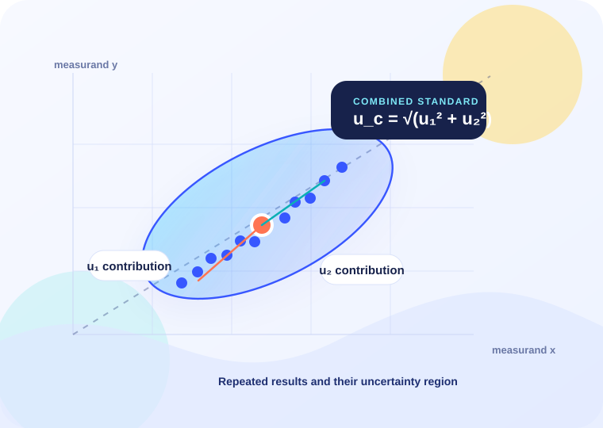

先看条件
独立、相关、A 类、B 类和已修正误差不混用。
从测量模型到最终不确定度，边问边算，并把每个假设讲清楚。
内置 22 张双语知识卡和一套可核验的本地推理规则。需要更灵活的问答时，可以连接 DeepSeek；未连接时也能完整使用。

02 / ASK
本地知识引擎已就绪
按 Enter 发送，Shift + Enter 换行。涉及相关性或单位时，请补充题目条件。
独立、相关、A 类、B 类和已修正误差不混用。
测量模型确定灵敏系数，计算器负责可验证的数值。
答案给出单位、适用条件与 GUM / JJF / VIM 依据。